Plate 06 Kudamattam — the ceremonial exchange of silk parasols above the elephants. A wordless conversation between Paramekkavu and Thiruvambadi, played out colour by colour.
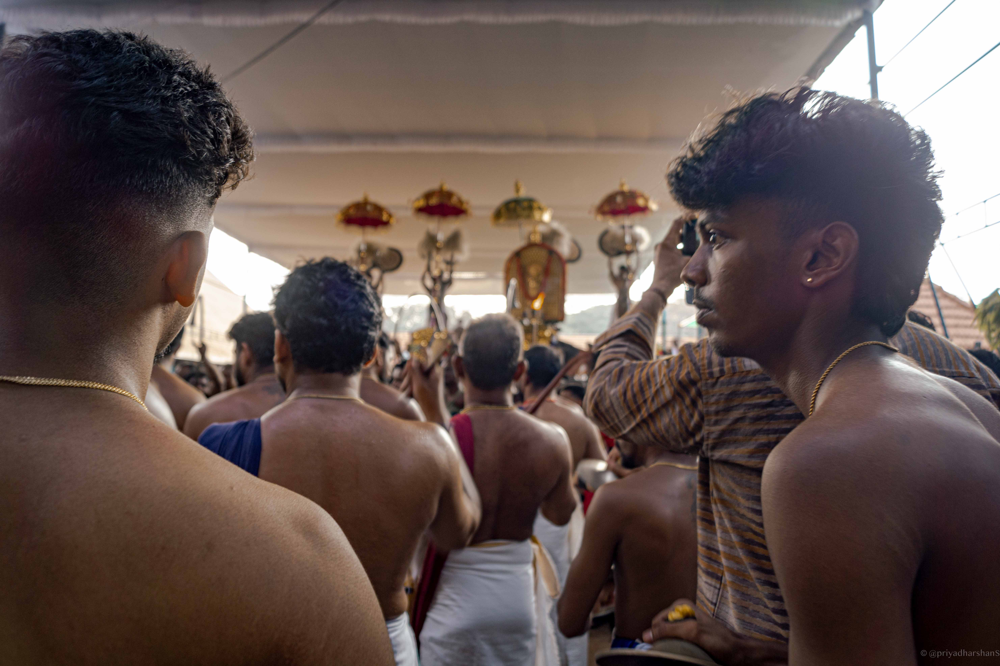
A Photo Essay · Kerala · May 2025
Thrissur Pooram
Where it began
In 1798, when the smaller temples of Thrissur were turned away from the Arattupuzha Pooram, the ruler Sakthan Thampuran answered with a festival of his own. Ten temples, one ground, one night — a deliberate act of unification dressed as a celebration.
Two and a quarter centuries on, the bargain still holds. The elephants still walk in, the drums still rise, and the city still empties itself onto the Thekkinkadu Maidan to watch the gods meet under parasols of silk.
These photographs were made over the long day and longer night of Pooram, May 2025 — a slow accounting of a fast festival.
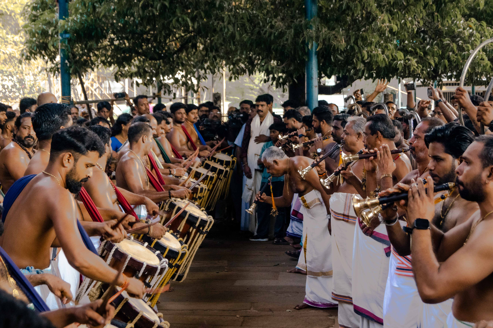
I — The Approach
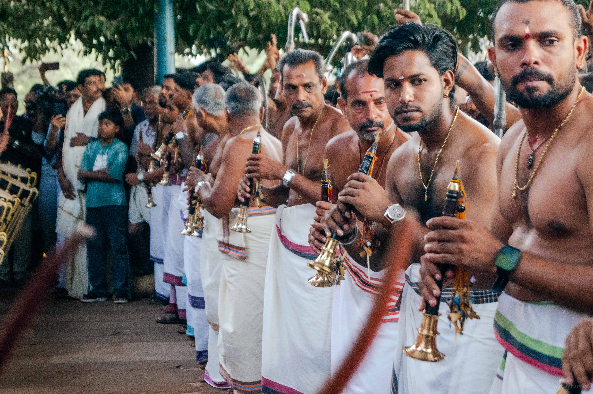
Plate 01 The hours before the procession belong to the waiting — to vendors, to children, to the heat lifting off the maidan.
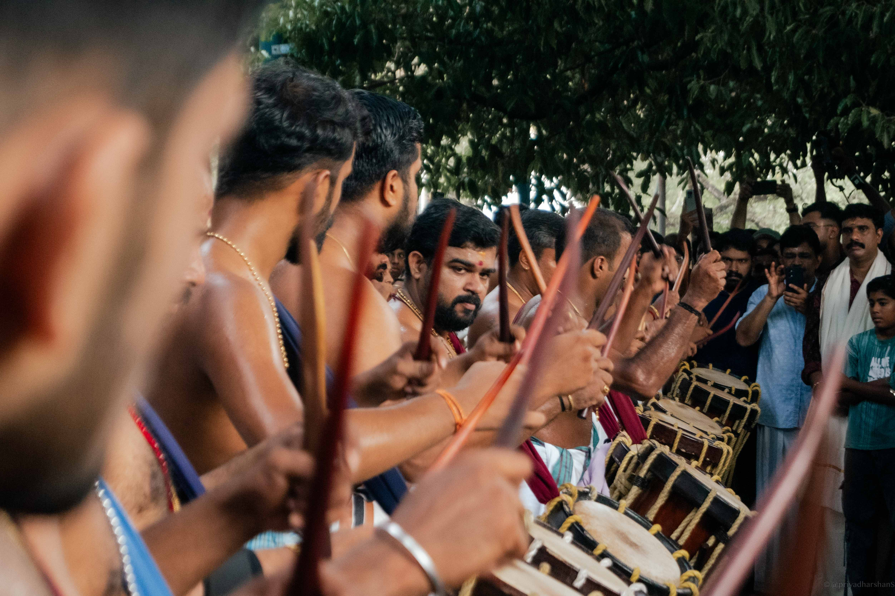
II — The Elephants
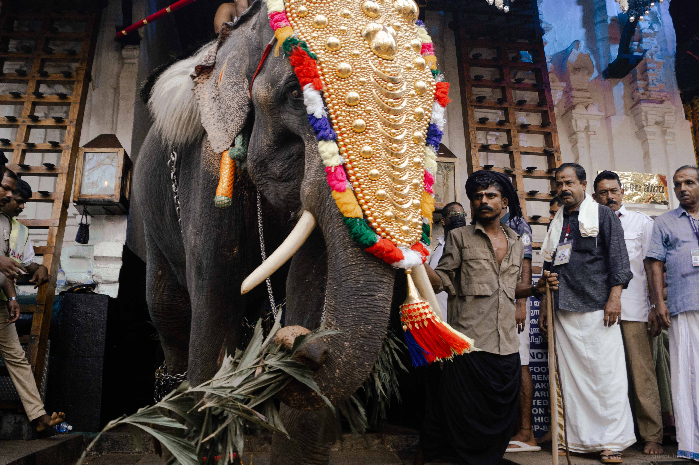
Plate 02 The nettipattam — a forehead ornament beaten from sheet gold — was once a gift to temple deities. Today it rides into the maidan on the brow of an elephant.
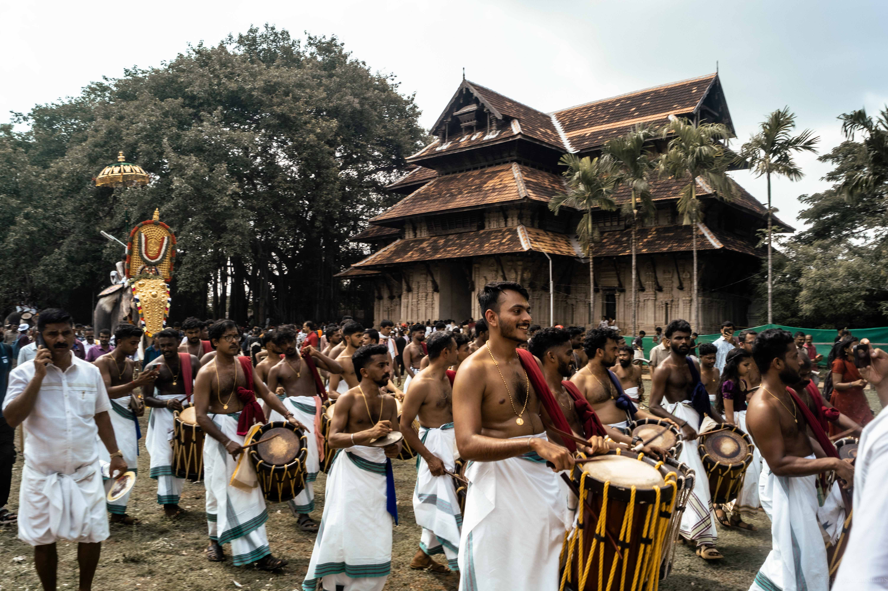
III — Faces in the Crowd
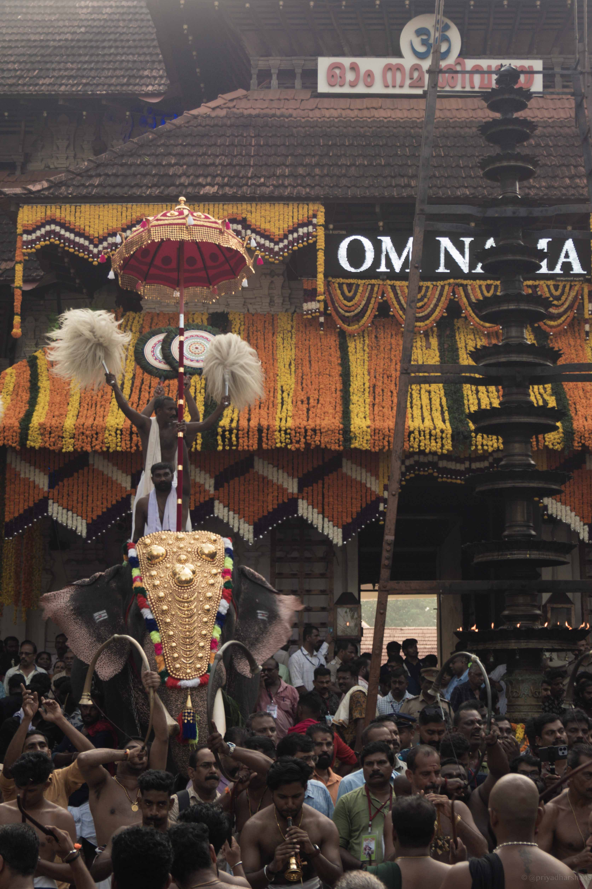
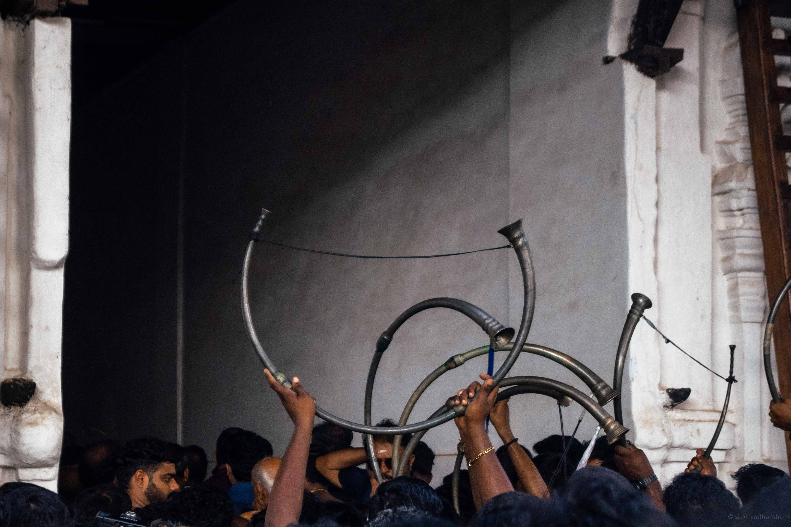
Plates 03 — 04 Two and a half lakh come every year. Sakthan Thampuran's quiet act of inclusion is now the largest gathering Kerala holds.
IV — The Melam
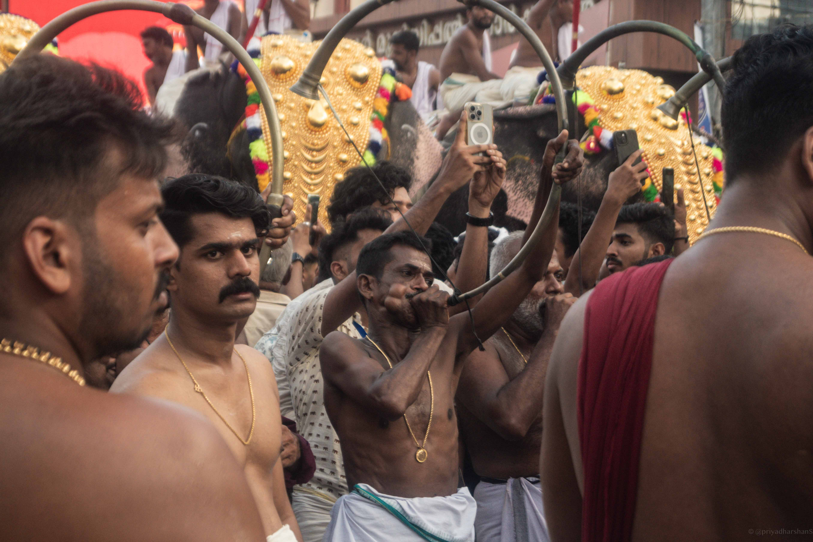
Plate 05 Pandi melam — over two hundred percussionists locked into a single climbing tempo. The piece lasts nearly four hours and ends in a frenzy the crowd has been waiting all afternoon to meet.
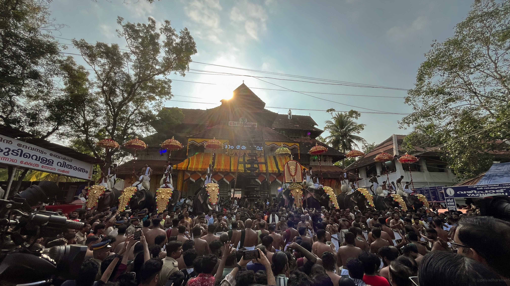
V — Kudamattam
Plate 06 Kudamattam — the ceremonial exchange of silk parasols above the elephants. A wordless conversation between Paramekkavu and Thiruvambadi, played out colour by colour.
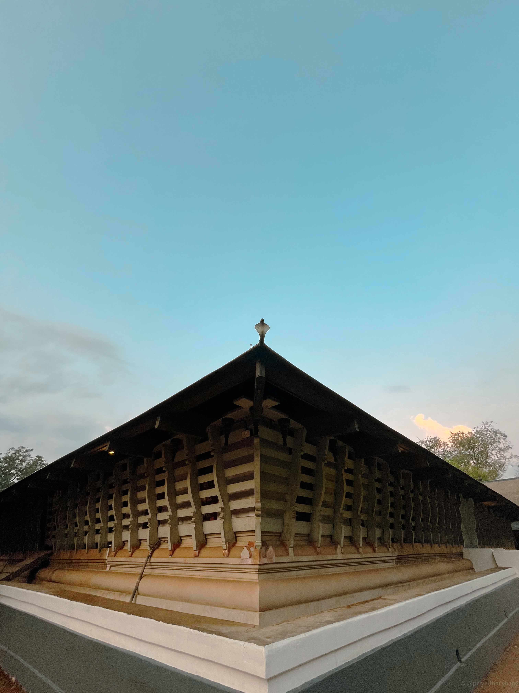
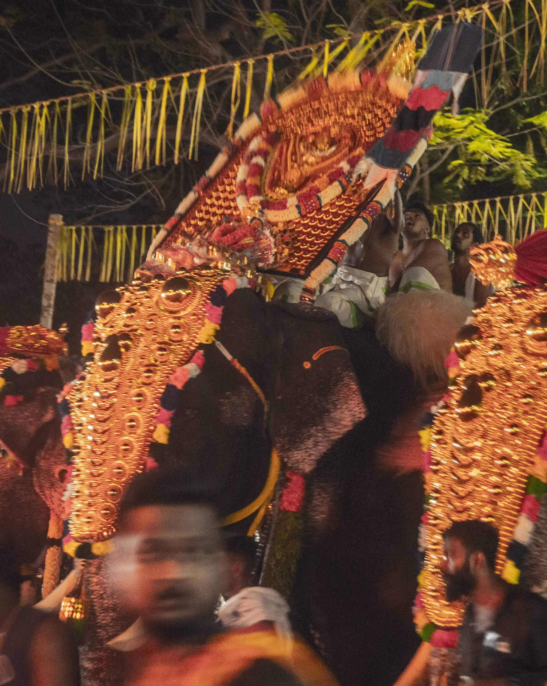
VI — Vedikettu
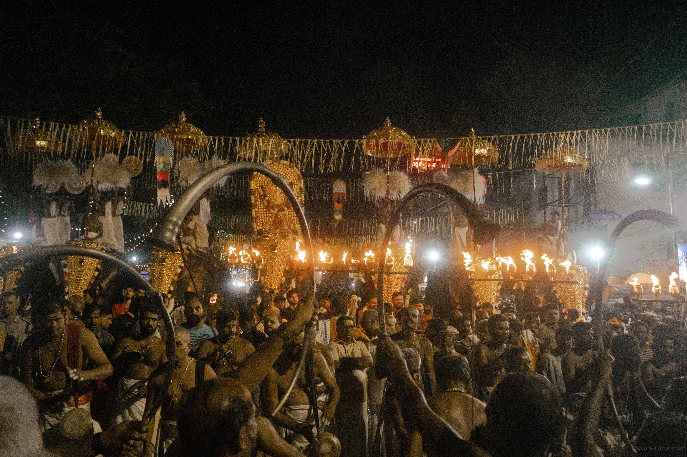
Plate 07 The fireworks begin near three in the morning and do not stop for an hour. The maidan tilts its face up. The drums, for once, are quiet.
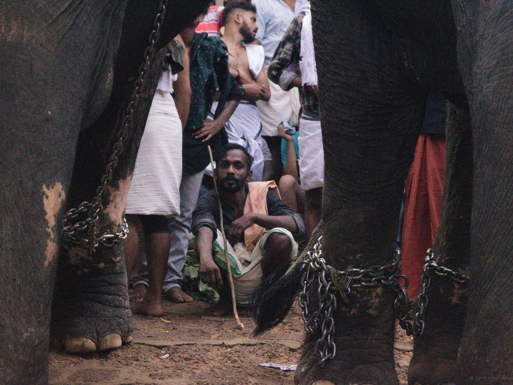
Plate 08 — The Mahout Before the gold, before the drums, before the crowd — there is the paappaan. Long before sunrise he bathes the elephant in the river, oils its trunk, walks it the last miles to the maidan. Through the heat, through the four-hour melam, through the fireworks that would scatter any other animal, his hand stays on the shoulder. The festival belongs to the gods. The elephant belongs to him.